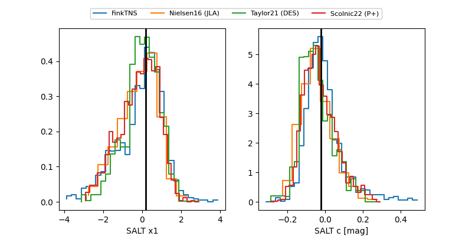

FINK: ZTF25abmhgez
Lasair: ZTF25abmhgez
ALeRCE: ZTF25abmhgez
ZTF25abmhgez (ztf,fink)
equatorial (ra, dec) = (282.5478,-22.04955)
galactic (l, b) = (12.9831,-9.59560)

last atlasc=19.10, atlaso=19.14, ztfg=18.66, ztfr=19.08
1 atlasc, 4 atlaso, 3 ztfg, 8 ztfr detections